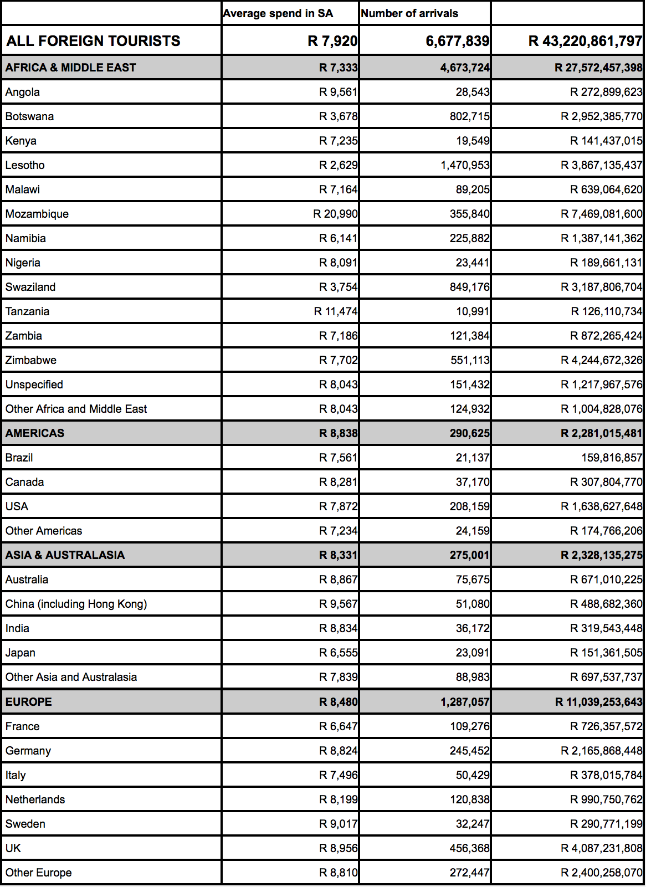
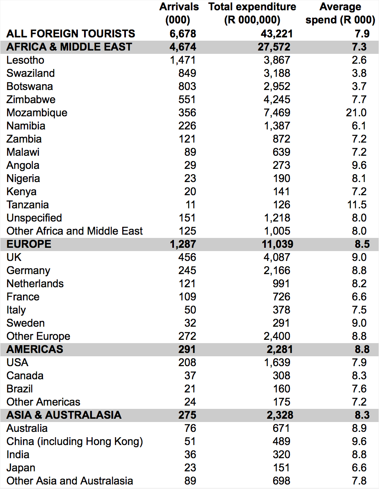

We end this section with a published table that can be improved using many
of the techniques described in the last few pages.
Tourist arrivals in South Africa
The following table was published as part of a report on tourism in South
Africa. It describes the origin of tourist arrivals in 2004 and the amounts
that they spent in South Africa (excluding capital expenditure).

This table can be improved in several ways:
- Grid lines
- Every entry in the table is boxed. Removal of the lines brings the values
closer together and makes it easier to make comparisons.
- Significant digits
- Far too many significant digits are shown. The accuracy of the collected
data is unlikely to be as high as the reported values (especially for
the total expenditures) and it is hard to envisage any use of the data
that would require such accuracy. (The 'R' indicating the currency can
also be removed.)
- Reordering categories
- The countries in each region have been ordered alphabetically. Reordering
by either the number of arrivals or the total expenditure is better —
makes it easier to spot unusual values in other columns. (Reordering the
columns may also help.)
The table below presents the data more clearly. The eye is encouraged to
scan down columns looking for patterns and unusual values.
